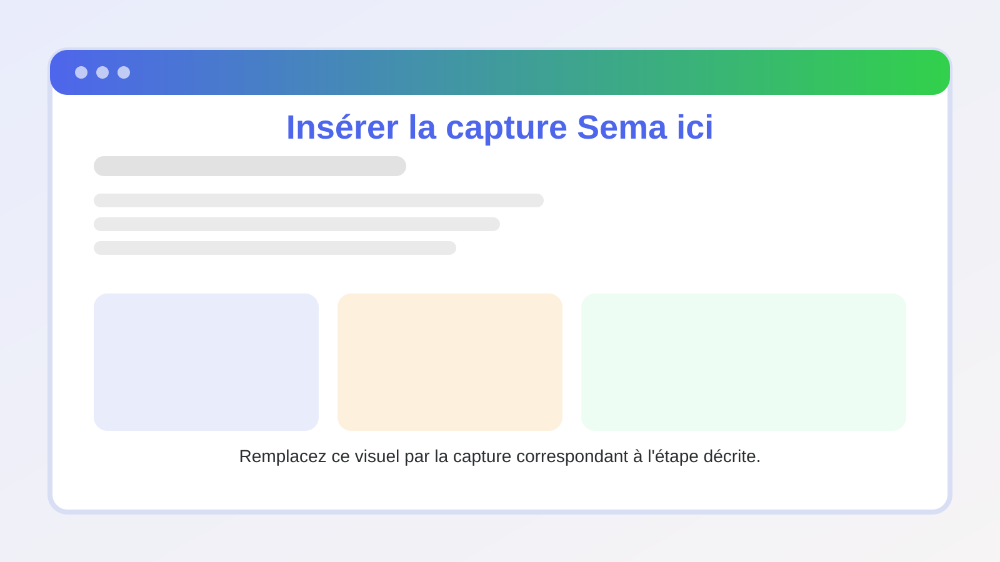

Programmes de fidélité, tombola et événements
Sema Core peut intégrer des fonctionnalités d’engagement comme les programmes de fidélité, les tombolas ou les événements. Ces modules aident à récompenser les clients et à encourager les interactions.
Objectif du module
Ces programmes permettent de :
Créer une mécanique de récompense ;
Organiser une tombola ou un concours ;
Suivre les participations ;
Engager les clients après une campagne ;
Renforcer la fidélisation.
Capture à insérer — Programmes
{kind=link}

Ajoutez ici une capture de la page Programmes, Loyalty Program ou Tombola Program.
Étape 1 — Ouvrir le module programme
1. Dans le menu, ouvrez Loyalty Program, Tombola Program ou Events selon le module activé. 2. Consultez la liste des programmes existants. 3. Vérifiez leur statut.
Capture à insérer — Liste programmes
Ajoutez ici une capture de la liste des programmes.
Étape 2 — Créer un programme
1. Cliquez sur Créer ou Ajouter. 2. Donnez un nom au programme. 3. Définissez la période. 4. Décrivez les règles de participation. 5. Configurez les récompenses ou lots. 6. Enregistrez.
Capture à insérer — Création programme
Ajoutez ici une capture du formulaire de création.
Étape 3 — Lier le programme à une campagne ou un scénario
1. Ouvrez la campagne ou le scénario concerné. 2. Ajoutez le message d’annonce. 3. Ajoutez le lien, bouton ou action de participation. 4. Utilisez une variable pour suivre la participation si nécessaire. 5. Testez le parcours complet.
Capture à insérer — Programme dans une campagne
Ajoutez ici une capture montrant le lien entre un programme et une campagne.
Étape 4 — Suivre les participations
1. Ouvrez le détail du programme. 2. Consultez le nombre de participants. 3. Vérifiez les statuts. 4. Exportez la liste si l’option est disponible. 5. Analysez les résultats dans le tableau de bord si les données sont remontées.
Bonnes pratiques
1. Rédigez des règles simples. 2. Précisez la période du programme. 3. Testez l’inscription avant lancement. 4. Vérifiez les obligations légales ou internes liées aux concours. 5. Suivez les résultats dès le démarrage.